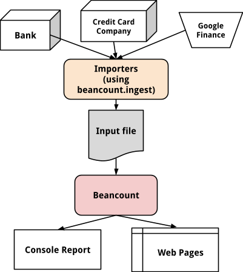

非官方中文译文 · 术语保留英文；代码、account、option、币种原样。 原文：https://beancount.github.io/docs/command_line_accounting_in_context/
命令行记账的背景
Martin Blais，2014 年 7 月
http://furius.ca/beancount/doc/motivation
本文旨在为使用复式记账命令行系统管理个人财务提供背景信息和动机。
动机
当我向人们介绍我在命令行记账方面的折腾活动时，我会得到各种各样的反应。
有时，我会听到他们对自己财务状况的绝望回声：许多人希望自己能更好地掌控和理解自己的财务，他们叹息着希望自己能有更好的条理。其他时候，在我描述完我的流程后，我会得到难以置信的反应：“你为什么要费这个劲？”这些人觉得他们的财务生活非常简单，可以在 5 分钟内概括完毕。这些人通常对自己拥有多少个账户一无所知，对自己目前的财务状况只有模糊的概念。他们名下至少有 20 个账户；只有当我们深入细节时，他们才会意识到自己的财务生态系统比他们想象的更复杂。最后，还有一些人对使用强大的记账系统这一想法感到非常兴奋，但实际上并不理解我在说什么。他们可能认为这是一个支持投资组合的系统，或者是我用来像吝啬鬼一样精心策划预算的工具。通常，他们最终会觉得这太复杂了，以至于无法真正开始使用。
本文档试图用具体的术语解释命令行记账是关于什么的，你从中能获得什么，各个软件组件如何协同工作，以及你可以从这种方法中期待什么样的结果。事实是，复式记账法是一种基本技术，每个人都应该在高中时被教授。而将其用于自身，是一个简单而强大的过程，你可以用它来驱动你的整个财务生活。
究竟什么是“会计”？
当人们谈论“会计”时，他们通常隐晦地指代以下一个或多个不同的财务流程：
-
Bookkeeping（簿记）。 将过去的 transaction 记录在单一位置，即“账簿”（ledger），也被称为“the books”，例如“这家公司的账簿”。本质上，这意味着将外部账户对账单中发生的金融 transaction 的金额和类别复制到包含实体所有相关“account”并将其相互关联的单一系统中。这通常被称为“记账”（keeping books），或“簿记”（bookkeeping）活动。
-
Invoices（发票）。 准备发票并跟踪付款。承包商通常会提到这一点，因为这是其业务的主要关注点：向客户发出已提供服务的付款请求，并检查相应的付款是否确实已收到（如果未收到，则采取催收措施）。如果你正在管理一家公司的财务，处理工资单是这一方面的另一个内容，其中包含大量的簿记工作。
-
Taxes（税务）。 查找或计算应税收入，填写税务表格并向实体所属的各个政府机构报税。这个过程可能很繁琐，对于开始看到个人资产复杂性增加（许多不同类型的 account、新的报告要求）的人来说，可能会带来相当大的压力。这往往是他们开始思考如何整理自身财务状况的时刻。
-
Expenses（支出）。 分析支出，基本上回答这个问题：“我的钱花到哪里去了？”一个收入微薄且拥有多张信用卡的人可能希望精确跟踪和计算每月的支出。这仅仅是为了建立意识。即使资源充足，查看定期支出多少以及大部分定期收入流向何处也很有趣，这往往会带来意想不到的发现。
-
Budgeting（预算）。 预测未来支出，将有限金额分配给各个类别，并跟踪实际支出与这些分配的接近程度。对于个人而言，这通常是在尝试偿还债务或寻找更多储蓄方式的背景下进行的。对于公司而言，这发生在规划各种项目时。
-
Investing（投资）。 汇总并计算 investment 回报和资本利得。我们现在中的许多人通过折扣经纪商管理自己的储蓄，通过 ETF 和单独选择的共同基金进行投资。能够查看资产分布和风险敞口，以及计算资本利得，是非常有用的。
-
Reporting（报告）。 上市公司有监管要求，需要向投资者提供透明度。因此，他们通常报告年度 income statement（损益表）以及期初和期末 balance sheet（资产负债表）。对于个人而言，当在银行申请个人贷款或抵押贷款时，这些相同的 report 也很有用，因为它们提供了某人财务状况的窗口。
在本文档中，我将描述命令行会计如何为这些活动提供帮助和支持。
它能为我做什么？
你可能会合理地提出疑问：好吧，但为什么要费这个劲呢？我们可以从会计能够为你回答的问题这一角度，来审视会计的用途：
-
我的钱在哪里，Lebowski？ 如果你不记账、大量使用现金、拥有过多的信用卡，或者你只是一个头脑中充满云彩、才华横溢却生活混乱的艺术家，你可能会纳闷为什么月底剩下的豆子（钱）没有你期望的那么多。利润表（income statement）将回答这个问题。
-
我想像沃伦·巴菲特那样。我每个月需要存多少钱？ 我个人不做预算，但我知道很多人会。如果你为某个项目设定了具体的财务目标，或者为了将来而储蓄，你需要做的第一件事就是分配预算并限制你的支出。追踪你的资金是迈向这一目标的第一步。你甚至可以计算你的回报率，以便与市场进行对比。
-
我有一些现金可以投资。鉴于我的投资组合，我应该把它投在哪里？ 能够报告你所有持仓的总和，你可以确定你的资产类别和货币敞口。这有助于你决定将新的储蓄放在哪里，以匹配目标投资组合配置。
-
我的身价是多少？ 你有一个 401k、一个 IRA 和应税账户。还有一笔剩余的学生贷款，或者你可能正持有一处带有两笔抵押贷款的房地产。总之，总额是多少？获得一个单一的数字，告诉你距离退休目标还有多远，这真的很有用。Beancount 可以轻松计算你的净资产（精确到分）。
-
2008 年的伤痛仍在。我的投资安全吗？ 例如，我正在使用各种折扣券商管理自己的资金，很多人也是如此。我基本上是在运行一个使用 ETF 的微型对冲基金，我的目标是在资产类别、行业敞口、货币敞口等方面尽可能分散。此外，由于有税收递延账户，我无法在一个地方完成这一切。使用 Beancount，你可以生成持仓列表并按类别进行汇总。
-
税真讨厌。 好了，多说无益。为什么讨厌？主要是因为不确定性和疑虑。不知道发生了什么并不令人愉快。如果你能即时掌握所有数据，情况就不会那么糟糕了。你需要报告什么？对于一些人来说，只有一笔收入流，但对于许多其他人来说，情况变得复杂（你可能正处于这种状况而不自知）。合格股息与普通股息、长期资本利得与短期资本利得、次要来源的收入、洗售（wash sales）等等。到了报税的时候，我会调出当年的利润表，我就有一份清晰的项目列表用于填报，以及我可以扣除的项目。
-
我想买房。我能攒多少首付？ 如果你突然需要大量现金，你能负担得起多少？好吧，如果你能生成你的持仓列表，你可以按“流动性”进行汇总。这能让你在紧急情况下了解可用的现金。
-
银行先生，请借我一些钱。 给银行里的极客留下深刻印象：只需带上你的资产负债表。理想情况下，是当天早上刚生成的。你应该在任何时间点都拥有完整的资产负债表。
-
你最终离世的说明。 立遗嘱涉及列出你的资产。通过提供一份完整的待传承或待收集的豆子（资产）列表，可以让你子女的生活更轻松。金额只是故事的一部分：能够列出所有账户和机构将使某人更容易清理你的资产。
-
我记不清他们是否付过钱了。 如果你发出发票并有应收账款，拥有一种方法来追踪谁已经付款、谁只是说会付款，是很好的。
我相信你还能想到更多。请告诉我。
记账
好了，接下来是我要向你介绍该方法核心见解的部分。支撑所有其他活动的中心且最基础的活动是记账。一个至关重要且根本性的认识是，这个相对简单的行为——即将所有财务 transaction 复制到一个统一的集成系统中——使你能够生成 report，从而解决所有其他问题。你正在构建一个数据语料库，一个带有日期的 transaction 对象列表，其中每个对象都代表你拥有的某些 account 之间的资金流动。这些数据提供了你财务活动的完整时间线。
你所要做的只是输入每个 transaction，同时遵守一个简单约束，即复式记账法，其内容为：
每次向某个 account 记录金额时，必须向其他某个或某些 account 记录相应的反向金额，且这些金额的总和必须为零。
就是这样。这是该方法的核心，而遵守此约束的 transaction 集合将获得一些优良特性，这些特性在我的其他文档中有详细讨论。为了生成合理的 report，所有 account 还会被标记为四个类别之一：Assets、Liabilities、Income 和 Expenses。第五个类别 Equity 仅用于汇总所有先前 income 和 expense transaction 的历史。
命令行会计系统只是一种简单的计算机语言，用于方便地输入、读取和处理这些 transaction 数据，并确保遵守复式记账法的约束。它们是简单的计数系统，可以在专用计数器（“account”）中添加任何类型的“事物”。它们基本上是具有多个桶的计算器。Beancount 和 Ledger 在语法和部分语义上可能略有不同，但一般原则是相同的，简化假设也非常相似。
下面是一个 transaction 的具体示例，让你对其有个感觉。在一个文本文件中——这是命令行会计系统的输入——会写入类似以下内容，以表达一笔信用卡 transaction：
2014-05-23 * "CAFE MOGADOR NEW YO" "Dinner with Caroline"
Liabilities:US:BofA:CreditCard -98.32 USD
Expenses:Restaurant
这是一个包含两个“posting”或“leg”的示例 transaction。“Expenses:Restaurant”行是一个 account，而不是一个类别，尽管 account 通常表现得像类别（这两个概念之间没有区别）。expense leg 上的金额未指定，这是输入语言允许的一种便利。软件会自动使用余额的剩余部分确定其金额，在本例中为 98.32 USD，因此 -98.32 USD + 98.32 USD = 0（请记住，所有 posting 的总和必须平衡为零——这是由语言强制执行的）。
大多数金融机构都提供某种方式，让你以某种格式下载 account 活动的摘要。你 transaction 的许多细节会自动从这样的下载文件中提取，使用你编写的自定义脚本将其转换为上述语法：
-
transaction 日期总是可以从可下载文件中获取。
-
“
CAFE MOGADOR NEW YO”部分是“memo”，也由下载文件提供，这些名称通常足以让你弄清楚你消费的业务是什么。这些 memo 就是你在信用卡账单上看到的那些丑陋的名称。这作为“payee”属性附加到 transaction 上。 -
我手动添加了“
Dinner with Caroline”作为注释。我不必这样做（这是可选的），但当我对账新 transaction 时我喜欢这样做，这只需要一分钟，如果我去查找，它有助于我记住过去的事件。 -
导入器自动带入了带有金额的
Liabilities:US:BofA:CreditCardposting，但我不得不自己插入Expenses:Restaurantaccount：我手动输入了它。我的文本编辑器中有快捷方式，允许我使用 account 名称补全来做到这一点，只需一秒，而且极其简单。此外，通过在同一输入文件中包含的先前历史上运行一个简单的学习算法，也可以自动化预选择此 account（我们总是去同样的地方）。
语法会稍微复杂一些，例如，它允许你表示股票的买入和卖出，跟踪资产的 cost basis，还有许多其他类型的便利功能，比如能够在 account 中定义和统计任何种类的“事物”（例如，“累计的休假天数”），但这个例子捕捉到了我所做之事的精髓。我以这种方式复制我拥有的所有 account 中的所有 transaction，大部分是自动化的。我大约每两周花 1-2 小时来更新这个输入文件，而且只针对最常用的 account（信用卡和支票账户）。其他 account 我会每隔几个月更新一次，或者在我需要生成某些 report 时更新。由于我对自己的财务状况有扎实的了解，这已经不再是一种负担……它变得有趣了。
你得到的是一个完整的历史记录，一个跨越时间的所有 account 中所有财务 transaction 的完整时间线，这些 transaction 往往相互关联，构成了你的财务生活，全部在一个文本文件中。
生成报告
那么，精心维护这个文件的意义何在？我编写了代码来读取并解析它，可以在我机器上运行的本地 web 服务器上提供该数据的各种视图和聚合，或者从这个数据流中生成自定义报告。最实用的视图无疑是资产负债表和损益表，但还有其他一些：
-
资产负债表。 资产负债表在单页上列出所有资产和负债账户的最终余额。这是所有账户在某一时间点的快照，是对您财务状况的清晰概览。它显示了您的净资产（如果您更新了所有账户，则非常精确），也是如果您申请贷款时银行会感兴趣的内容。Beancount 可以生成任何时间点的资产负债表，但我通常对“当前”或“最新”的资产负债表更感兴趣。
-
损益表。 损益表是两点之间发生的所有收入和支出的摘要。它以任何会计师都熟悉的格式呈现这些账户的最终余额：收入账户在左侧，支出账户在右侧。这提供了对一段时间内发生变化的洞察，即变化的增量。它详细告诉您赚了多少，钱花在了哪里。两者之间的差额就是您存下的钱。Beancount 可以为任意时间段生成此类报表，例如今年，或逐月生成。
-
日记账。 对于每个账户（或者，如果您喜欢这样想的话，每个类别），我可以渲染出所有向该账户 posting 变化的 transaction 列表。我称之为日记账（Ledger 称之为“register”）。例如，如果您查看信用卡账户的日记账，它应该与您的银行对账单相匹配。另一方面，如果您查看“餐饮支出”账户，它应该显示您所有的餐饮外出，涵盖所有支付方式（包括现金，如果您选择记录的话）。您可以轻松获取财务历史的任何细节，比如“三年前三月我和 Arthur 吃晚餐的那个地方是哪里？”或者“我想卖掉那张沙发……我当初花了多少钱来着？”
-
应付账款和应收账款。 如果您有已知将收到的金额，例如，您申报了税款或发送了发票并预期收到付款，或者您寄出了支票并预期在未来某个时候被兑现，您可以使用专用账户来跟踪这些情况。Transaction 具有允许您将许多 transaction 链接在一起并确定哪些已支付或已收到的语法。
-
计算税款。 如果您根据工资单上的详细信息录入您的工资存款，您可以精确计算已支付的税款，这些金额应与雇主年度收入报告表（例如，美国的 W2 表格，加拿大的 T4 表格，英国的 Form P60，或如果您居住在其他地方的其他表格）上报告的金额完全一致。如果您需要分期缴纳税款，这特别方便。如果您是承包商，您将不得不跟踪许多此类事项，包括公司可报销的费用。统计您需要作为应税收入报告的股息也很有用。
-
投资。 我并不算富有，但我使用折扣经纪商和主要是 ETF 来管理自己的资产。此外，我利用了多种税收优惠账户，资产选择有限。这在现在相当普遍。可以说我在管理一个微型对冲基金，这离现实也不远。使用 Beancount，我可以生成所有持仓的详细列表，包括每日 market value 变化、资本利得、股息、资产类型分布（例如，股票与固定收益）、货币敞口的报告，并且我可以确定我的资产中有多少是流动的，例如，我有多少钱可用于房屋首付。精确地，并且在任何时间点。这很好。我还可以生成持仓的各种聚合，即按账户、按工具类型、按货币的价值。
-
预测。 我工作的公司有一个员工股票计划，带有归属时间表。我可以在合理假设下预测我的预期收入，包括归属的股票。我可以回答这个问题：“以这个速度，我在哪一天达到 X 的净资产？”假设 X 是您退休所需的金额。
-
分摊费用。 如果您与他人分摊费用，例如与朋友旅行或有室友，复式记账法提供了一种自然且简单的解决方案来对账费用。您还可以生成各种已发生费用的报告以明确情况。没有不确定性。
-
预算。 我赚的钱足够多，以至于我并没有特别设定具体目标，但我计划支持实现此功能的特性。
你基本上就像管理一家公司那样管理个人财务……但由于你使用的是一种简单且设计巧妙的计算机语言，它做了许多简化（例如摒弃了“借方和贷方”的概念），将流程精简到了最基本的程度，因此这非常容易。
自定义脚本
应用的可能性是无限的。我有很多关于为自定义项目生成 report 的疯狂想法。这些是有用且有趣的实验，我称之为“挑战”。一些示例：
-
我曾经拥有一套公寓单元，并在整个持有期间直至出售期间都进行了复式记账。所有对应的 account 都包含
Loft4530这个名称。这意味着我有可能计算所有相关 cash flow 的精确 internal rate of return，包括诸如更换灯泡费用等琐碎事项。将其视为一项纯粹的 investment。纯属娱乐。 -
我可以渲染我年度支出和资产的 tree-map。这是这些类别的良好可视化方式，保留了它们的相对重要性。
-
我可以查看经过货币时间价值修正后的平均支出。这会很有趣，告诉我我的生活成本随时间如何变化。
其美妙之处在于，一旦你拥有了数据语料库（如果你增量维护它，创建起来相对容易），你可以通过编写少量 Python 代码来做各种有趣的事情。我构建 Beancount 以通过两种方式实现这一点：
-
通过提供“plugins”系统，允许你过滤一组已解析的 transaction。这使得你可以修改 Beancount 的语法并原型化新的数据录入便利功能。默认提供的 plugins 仅通过过滤和转换已解析 transaction 列表来提供扩展功能。而且很简单：你只需要实现一个具有特定 signature 的回调函数，并在你的输入文件中添加一行。
-
通过编写脚本。 你可以用很少的代码解析并获取 ledger 的内容。在 Python 中，这看起来并不比这更复杂：
import beancount.loader
…
entries, errors, options = beancount.loader.load_file('myfile.ledger')
for entry in entries:
…
瞧。你已经在通往输出任何你想要的输出的道路上了。你可以访问 Python 世界中的所有库，我的代码主要是函数式的，文档详尽且经过彻底的单元测试。你应该能够轻松找到方向。此外，如果你不确定是否使用此系统，你可以先使用它开始录入数据，然后稍后编写一个脚本将其转换为其他格式。
归档文档
如果你已经为现实世界中的每个账户定义了 account，那么你也已经建立了一种组织对账单和其他纸质文档的自然方法。随着我们越来越多地通过电子邮件与会计师和机构沟通，将信件扫描为 PDF 并将其作为计算机文件保存变得越来越普遍。所有银行现在都已实现无纸化，如果你愿意，可以下载这些对账单（我倾向于在年底做一次，以便保存，以防万一）。能够整齐地组织这些文件并轻松检索这些文档是很好的。
我的做法是维护一个目录层次结构，镜像我定义的 account 名称，看起来像这样：
.../documents/
Assets/
US/
TDBank/
Checking/
2014-04-08.statement.march.pdf
2014-05-07.statement.april.pdf
…
Liabilities/
US/
Amex/
Platinum/
2014-04-17.March.pdf
2014-04-19.download.ofx
…
Expenses/
Health/
Medical/
2014-04-02.anthem.eob-physiotherapy.pdf
…
这些示例文件对应于名称为 Assets:US:TDBank:Checking、Liabilities:US:Amex:Platinum 和 Expenses:Health:Medical 的 account。我将此目录置于版本控制之下。只要文件名以日期开头，例如“2014-04-02”，Beancount 就能自动找到这些文件，并插入 directive，这些 directive 会在其 web 界面中作为 account 日志的一部分呈现，你可以点击它们来查看文档本身。这使我可以在一个地方找到所有对账单，如果我在搜索某个文档，它有一个明确的位置，我知道去哪里找它。
此外，我编写的导入软件能够识别下载的文件，并自动将它们移动到相应 account 的目录中。
各部分如何协同工作
前面我已经描述了自己如何管理财务。在这里，我将介绍各个软件组件以及它们是如何协同工作的：
-
Beancount 是系统的核心。它读取我更新的文本文件，解析我定义的计算机语言，并根据生成的数据结构产生 report。该软件仅读取输入文件，并且有意不与其他程序通信。它在隔离环境中运行。
-
Beancount 的 ingest 包和工具通过从银行和其他机构的文件下载中提取 transaction，帮助自动化 account 数据的更新。这些工具协调运行由你实现的 importer（所有繁琐的导入代码都位于此处，这些代码旨在使保持文本文件最新变得更容易，例如可以解析 OFX 和 CSV 文件）。参见 bean-extract 和 bean-identify 工具。
-
ingest 包还有助于归档文档（参见 bean-file 工具）。由于它能够识别哪个文档属于哪个 account，因此可以自动将下载的文件移动到文档归档中。这为我节省了时间。
-
最后，为了提供 market value，Beancount 输入文件应包含适当的 price directive。Beancount 还包含用于获取账本文件中各种商品最新或历史价格的代码（参见 bean-price 工具）。与从 OFX 下载中提取 transaction 类似，它也会输出用于定义价格的 Beancount 输入语法。
请参阅下图，这是一张展示这些组件如何协同工作的示意图。

为什么不直接使用电子表格？
这确实是一个好问题，电子表格无疑是非常有用的工具。如果我能用电子表格来追踪我的财务，我肯定就不会去开发自己的软件了。
问题在于，复式记账 transaction 数据的内在 结构 并不适合以表格形式表示。每个 transaction 都有多个属性（日期、摘要、标签），以及两条或更多的 posting，每条 posting 都关联一个金额，可能还包含 cost。如果你将日期放在一个轴上，将 account 放在另一个轴上，最终会得到一个非常稀疏且庞大的表格；这既不太实用，编辑起来也极其困难。另一方面，如果你为每一行设置一个专门用于 account 名称的列，那么所有的计算逻辑都必须将 account 单元格纳入考量。这将非常难以处理，甚至可能根本无法实现。所有数据聚合操作都是相对于 account 名称进行的。
此外，处理带有 cost basis 的单位累积需要复杂的操作。我甚至不知道如何在电子表格中推进这项工作。命令行记账系统的核心部分是库存逻辑，它允许你追踪 account 中持有的每个单位的 cost basis，并且仅针对现有的 lot 记录头寸的减少。这使得系统能够自动计算资本利得。这与强制约束所有 transaction 上的 posting 总和为零的代码逻辑密切相关。
我认为，“transaction <-> postings” 的数据表示方法，结合一种合理的库存更新方法，是这一系统的精髓。对这些功能的需求，正是创建一种专门方法来构建此类数据的理由，例如一种计算机语言。最后，拥有自己的语法提供了提供其他类型有用 directive 的机会，例如 balance assertion、开/关日期，以及对 transaction 子集的复杂过滤。你在电子表格中根本无法实现我们所做的事情。
为什么不直接使用商业应用？
那 Mint.com 呢？
人们经常告诉我，他们使用 Mint.com 来追踪自己的财务状况，通常紧接着会提出一些具体的抱怨。像 Mint 这样的在线服务提供了复式记账功能的一个子集。这些服务的主要重点在于按类别报告支出以及维护预算。因此，它们在自动化下载信用卡和银行 transaction 方面做得非常出色。我认为，如果你希望以一种低维护成本的方式来追踪财务状况，并且不介意明显的隐私风险，那么这是一个绝佳的选择：它配有 Web 界面、移动应用，更新你的账户可能只需要点击一些按钮、提供一些密码，以及每隔几周进行少量手动修正。
然而，对于我自己使用它，我有几点保留意见：
-
密码。 我对任何商业公司都不够放心，以至于愿意分享我所有银行、信用卡和 investment 账户的密码。在我看来，这是一个疯狂且非常可怕的想法，我不愿意将如此多的信任交给任何一家公司。我不在乎他们怎么说：我在几家软件公司工作过，我深知销售人员做出的承诺、网站公关宣传与工程现实之间的脱节。我也知道坚定的计算机黑客所拥有的力量。
-
报告功能不足。 报告可能很漂亮且色彩丰富——在网站上看起来非常精美——但对于我想在我的数据上进行的所有报告来说，肯定是不够的。报告无法按他们想要的方式工作，是我听到关于这些系统的常见抱怨。使用我的系统，我始终可以编写脚本，生成我未来可能想要的任何类型的 report。例如，输出我支出的 treemap 可视化，而不是无用的饼图。我可以用各种独特的方式对我的 transaction 进行切片和细分。我可以为项目或旅行标记 transaction 的子集并对其进行报告。它比通用报告更强大。
-
持久性。 如果这家公司在 5 年后不再经营怎么办？我的数据会在哪里？如果我花任何时间整理我的财务数据，我希望确保它永远以开放格式对我可用。对他们有利的是，这些网站中的一些可能提供可下载选项，但谁会用呢？它甚至能正常工作吗？它会包含他们下载的所有 transaction 吗？我不知道。
-
不支持国际化。 它可能无法很好地处理国际、多货币的情况。这些服务针对的是“大多数”用户，其中大多数人的所有事务都在单一国家内。我住在美国，在加拿大有过去的历史，这涉及保留的免税 investment 账户、访问期间偶尔的支出（这证明在那里保留一张信用卡是合理的），以及未来可能涉及在另一个国家（如香港或澳大利亚）度过几年的历史。这在 Mint 中可行吗？可能不行。他们可能支持加拿大，但他们会支持两地的账户吗？那如果我可能想搬去的其他国家呢？我想要一个跨越所有国家、所有货币、永久整合的所有账户的单一视图，别无其他。我的系统很好地支持了这一点。（我不了解任何像 Beancount 那样以货币无关的方式处理国际问题的复式记账系统。）
-
无法处理特定情况。 如果我拥有房地产怎么办？我能否以合理的金额对我的房屋进行定价，从而创建准确的资产负债表？定期从热心的房地产经纪人那里获取我房产的“可比案例”，会比像 Zillow 这样的服务更精确地告诉我我的房子值多少钱。我需要能够为此输入数据以用于我的资产负债表。那我在以前工作过的一家澳大利亚私营公司获得的股票期权呢？我如何对其进行定价？那其他无形资产呢，比如我借给朋友的一笔个人贷款的应收账款？我怀疑在线服务无法提供输入这些的能力。如果你想要精确的全貌，你需要能够进行这些调整。
-
自定义追踪。 通过使用“虚拟货币”，我能够追踪除货币和股票之外的各种其他事物。例如，通过在 Beancount 中使用“
IRAUSD”商品，我能够追踪我在一年中任何时间点已经做了多少 401k 缴款。我可以用类似的方式计算传统 IRA 账户的税后基础。我甚至可以使用虚拟的“VACHR”货币来计算我的休假小时数，并对照我的工资单进行验证。 -
Capital gains reporting. 我自己还没有尝试过，但我听说其他人对 Mint 在 capital gains reporting 方面的有限功能感到不满。它会维护 trade lots 吗？它能处理 average cost booking 吗？FOREX gains 的 PnL 呢？通过 PayPal 出售那本书收到的收入呢？我希望能够将我的 accounting system 作为 tax reporting 的输入。
-
Cash transactions. 录入 cash transactions 有多困难？我是否必须登录，或者启动一个缓慢、笨重且只能在 Windows 下运行的程序？使用 Beancount 时，我只需在文本编辑器中打开一个文件，这既即时又简单。在线服务甚至允许录入自定义的 cash entries 吗？
换句话说，我是一个非常高级的用户，而且确实有点控制狂。我并没有在撒谎。我对使用商业服务没有任何意识形态上的反对，它可能不适合我。如果它对你来说足够好，那就随你便吧。尽管这些服务拥有精美且前景诱人的网站，但我还没有听说过有人对这些服务完全满意。我听到不少抱怨，也有一些轻微的满意，但我至今尚未遇到任何人为之狂热的人。
那 Quicken 呢？
Quicken 是一个单式记账系统，也就是说，它在本地复制远程账户的 transaction，并允许你为每笔 transaction 添加标签以将其归入某个类别。我相信它也支持同步 investment 账户。这对我来说还不够，我想追踪各种各样的事物，并且我想使用复式记账法，它提供了一种内在的校验机制，确保我正确地输入了数据。如果你已经跨过了理解复式记账法的门槛，单式记账法就远远不够了。
那 Quickbooks 呢？
那么，让我们来谈谈那些足以满足公司需求的成熟软件。我为什么不用那些呢？如果它们对小型企业来说已经足够好，那对我来说应该也足够了，不是吗？有 Quickbooks 和其他类似产品。我为什么不用它们：
-
需要付费。 商业软件是有价格的。好吧，我可能每年能负担得起几百美元（Quickbooks 2014 版的全功能套装看起来大约是 300$/年），但我真的不想这么做。
-
平台限制。 这些软件通常运行在 Microsoft Windows 上，有时也支持 Mac OS X。我是一名软件开发人员，主要使用 Linux，笔记本电脑用的是 Macbook Air，在上面除了 tmux 和 web browser 之外，运行其他任何东西都会让我感到烦躁。我不会仅仅为了录入一笔快速的现金 transaction 就重启系统。
-
启动缓慢。 我无法具体评论 Quickbooks 的实现，但我使用过的几乎所有商业规模的软件套件都有启动画面，并且启动过程非常缓慢，涉及初始化大量插件。它们假设你会在里面花上几个小时，这对商业用户来说是合理的，但对我来说不是，如果我只想快速更新一下我的账本。
-
UI 不够用。 我还没见过它们的 UI，但鉴于 transaction 的性质以及我精确输入、快速搜索和整理事物的需求，我希望能够以文本形式进行编辑。我想象这对我会很麻烦。使用 Emacs 和 org-mode，我可以在打开账本文件后几秒钟内轻松地通过 i-search 找到任何 transaction。
- 不灵活。 我将如何重新组织我所有的 account 名称？我认为我仍在学习复式记账法，过去犯过错误，这些错误让我希望重新审视我如何以层级结构组织我的 account。使用我的文本文件，我能够安全地多次重命名大量 account，并让我的 chart-of-accounts 随着我对如何组织财务跟踪系统理解的提高而演变。文本是强大的！
那 GnuCash 呢？
我不喜欢 UI；它们用起来不方便。对于程序员来说，没有什么比编辑文本文件更爽的了。此外，GnuCash 对多币种的处理也不够好。每次出于好奇去试用它（我大概每两年会试一次），我总能在第一个小时内发现 bug。其他程序，比如 Skrooge，也采用了那种笨重的大 UI 方案。
为什么要构建一种计算机语言？
记账系统出于多种原因，为一种涉及简单计算机语言的解决方案提供了条件。
如果你试图全面地追踪所有事项，单式记账在很大程度上是不充分的。现有系统要么将自己局限于支出类别，除了有时涉及冻结过去的“对账”之外，几乎没有其他检查。如果你不是在为公司做记账，有时直接修改过去并在错误发生的地方进行修正可能更合理。更重要的是，单式记账法让我们缺乏双式记账系统中涉及的自然错误检查机制。
使用电子表格也无法优雅地解决这个问题；构成双式记账系统基础的简单数据结构，要么推断出一个非常稀疏的电子表格，其中一个维度是账户，另一个维度是 transaction。对于实际使用而言，这是不切实际的。围绕这一主题的另一种迭代方案是插入带有两列的 posting，一列是 account，另一列是金额，但列数的变化以及查找代码使得这种方式同样不优雅。此外，如何处理大量货币也不明显。
提供花哨图形或基于 Web 的用户界面的程序，由于问题的性质，不可避免地显得笨拙：每个 transaction 都是通过从一个 account 的日志视角来组织的，但其 posting 中出现的任何 account 都提供了同样有效的视角。理想情况下，你只想查看 transaction。为了最方便的输入而组织它们，与它们应被呈现的顺序关系不大。使用文本有很多优势：
- 你可以轻松使用查找替换和/或 sed 进行全局更改，例如重命名或重新组织你的 account；
- 你可以按照对数据输入最方便的顺序组织 transaction；
- 有许多现有的工具可以搜索文本；
- 你可以轻松编写各种小工具来输出数据语法，即从其他文件类型导入，或从其他系统转换。
- 文本本质上是开放的，即文件格式是一种你可以从中读取数据并存储在任何其他地方的格式，而不是当制作软件的公司停止支持时变得不可用的不可理解的数据块。
最后，试图从自动化来源（例如 mint.com）自动导入所有数据的系统存在一个主要缺陷：通常，为未自动化的 account 添加信息并不容易，甚至不可能。根据我的经验，在实践中，你将有一些需要追踪的条目和 account，它们没有很好的可下载文件格式，或者根本没有现实世界的对应物。为了生成一个人资产负债表的完整视图，能够在单一系统中输入个人的所有 account 是很重要的。换句话说，自定义 account 和手动输入的 transaction 非常重要。
鉴于上述所有原因，我认为计算机语言比带有定制界面的重型软件更适合表达这种数据结构。能够轻松打开一个文本文件并快速输入几行文本来添加一个 transaction 是很棒的——它快速且简单。账本文件提供了一种自然开放的方式来表达一个人的数据，并且可以进行版本控制或在人与人之间共享。多个文件可以合并在一起，并且对源文件的脚本操作可用于重新组织一个人的数据历史。此外，一个只读的 Web 界面，展示预期的各种 report 并允许用户探索数据集的不同视图，对于查看数据的目的来说就足够了。
命令行记账的优势
总而言之，与提供用户界面的商业软件包相比，使用命令行会计系统具有许多优势：
-
快速。 你无需启动一个带有启动画面、初始化缓慢的程序来向你的账簿中添加内容。从你最喜欢的编辑程序（我使用 Emacs）的书签中调出一个文本文件既简单又迅速。如果你整天都在使用文本编辑器，就像许多程序员那样，文件几乎瞬间就会出现在你眼前。它既快速又便捷。
-
可移植。 它可以在所有平台上运行。Beancount 使用 Python 3 编写，并包含一些 C 扩展，因此可以在 Mac、Linux 和 Windows 平台上运行。我非常谨慎并致力于将对第三方软件包的外部依赖降至绝对最低，以避免安装问题。它应该易于安装和更新，并在任何地方表现一致。
-
开放性。 你的数据是开放的，并且将永远保持开放。我计划保留我的数据语料库直到我去世的那一天。使用开放格式，你永远不会陷入 transaction 数据被困在未知格式的二进制块中且软件不再受支持的局面。此外，你的数据可以轻松转换为其他语言。你可以轻松调用我提供的 parser 并编写一个脚本，将其输出为另一种程序的输入语法。你可以将其置于版本控制之下。你可以使用 sed 重命名字符串来完全重新组织你的 account 结构。文本赋予你力量。
-
定制化。 你可以生成高度定制的 report，以精确解决你所面临的问题。我经常听到人们对其他财务软件的抱怨是它无法完全满足他们的需求。使用命令行会计系统，你至少可以自己编写一个小扩展，利用你的数据语料库来实现所需功能。
为什么不直接使用 SQL 数据库？
我不喜欢重复造轮子。如果这个问题可以通过填充一个 SQL 数据库然后对其进行查询来解决，那我会毫不犹豫地那样做。创建一种语言是一项巨大的开销，它需要维护和演进，并非易事，但事实证明，为了解决这个问题，这是必要且合理的。
这个问题源于以下几个原因：
-
过滤操作发生在 transaction 与其子 posting 构成的两级数据结构上，将数据表示在单个表中以便进行操纵是不方便的。你不能仅针对 posting 进行操作：为了确保 report 平衡，你需要选择完整的 transaction。当你选择 transaction 时，其语义是“选择所有具有此或彼属性的 transaction 的 posting”。其中一个这样的属性是“所有具有 account X 的 posting 的 transaction”。这些语义在数据库中实现起来并不直观。数据结构的性质使其变得不便。
-
directive 种类繁多，使得设计一个能够容纳所有数据的单一优雅表格变得困难。理想情况下，我们希望为每种类型的 directive 定义两个表：一个表保存所有公共数据（日期、源文件名 & 行号、directive 类型），另一个表保存特定类型的数据。虽然这是可能的，但它偏离了单一数据表格的整洁结构。
-
对 inventory 的操作——即保存账户增量变化内容的 数据结构——需要特殊处理，这在数据库中难以实现。Lot 的减少受到正在运行的 lot inventory 的约束，每个 lot 都有特定的 cost basis。某些 lot 的减少会触发 lot 的合并（用于平均成本 booking）。这需要对这些 inventory 对象进行一些自定义操作。
-
聚合（breakdowns）本质上是分层的。Account 的树状结构允许我们对 posting 的子树执行操作。这在表格中也不容易实现。
最后，输入也会很困难。通过定义一种语言，我们绕过了必须构建一个允许我们创建数据的自定义用户界面的问题。
尽管如此，我确实喜欢与数据库打交道的想法。提供了一个脚本（bean-sql）用于将 Beancount 文件的内容转换为 SQL 数据库；在这些表上执行计算并不特别优雅，但它仍然被提供了。即使操作困难，你也应该能够对其进行尝试。我甚至可能预先计算某些操作的输出，以使运行 SQL 查询变得更加容易。
但是……我只想执行 X？
有些人可能会认为，既然他们设想自己可能只想将此类系统用于单一目的，那么我们所做的事情一定极其复杂。但事实是，你决定跟踪多少个 account 纯属个人选择。你可以选择以你认为足够少的细节来跟踪尽可能少的项目。例如，如果你只关心 investment，那么你可以只记录你的 investment 账户的账目。如果你有兴趣替代使用 Mint.com 或 Quicken，你只需简单地复制你的信用卡对账单，即可查看相应的支出。
只需在所有账户中复制 transaction，而无需为了查看财务状况而对所有资产和支出进行痛苦的年度“从零开始”评估，这种简便性会说服你。使用电子表格查看财务状况至少要求你从投资组合中复制数值。每次你想生成 report 时，你都必须更新这些数值……而使用我的方法，你只需更新每个账户的完整活动，并可以顺带获得完整的持仓列表。如果你有一套系统化的方法，让所有数据保持最新状态是很容易的。
对此，我想说：试试看，只对你感兴趣的部分进行记账。一旦你体会到 double-entry 方法是如何工作的，并学习了一些关于语言语法的知识，你就会想要获得更全面的图景。你会被深深吸引进去。
我为什么如此兴奋？
好吧，我已经变成了一个会计极客。我并没有主动要求这样。它只是在我没注意的时候悄然发生了（不过我依然不穿棕色袜子）。为什么我停不下来，一直在谈论这些东西？
我曾经拥有一家公司。它只是一个承接合同工作的外壳（是的，我最初对它有更宏大的抱负，但最后它仅仅如此。唉。）作为加拿大的一家企业主，我必须定期向联邦和省级政府缴纳五种不同类型的税款预缴款，有些是每月一次，有些是每季度一次，情况各不相同。一位会计师会给我提供填写表格所需的“神奇数字”，而我就像猴子一样照抄这些数字，完全不明白它们之后会被如何使用。我还必须单独统计与工作相关的各种费用（用于抵扣），以及纯粹的个人支出——我没有那种开两张不同信用卡的明智做法，而是试图从同一个账户中追踪个人与公司支出。此外，我还必须追踪公司账户与个人账户之间的转账，这些转账之后会被报告为股息或工资收入。我经常有多张待付发票，来自不同客户，付款周期往往超过两个月。这简直是半地狱。你大概能想象。我过去曾试图手动追踪所有这些事项，使用由小文本文件和电子表格组成的系统，非常小心地以特定方式操作。
问题在于，虽然我天性相当有条理，但我有时会，只是偶尔忘记更新其中一个文件。事情就会失去同步。当这种情况发生时，我感到极其沮丧，不得不花时间在各种对账单中翻找，找出我哪里出了错。这既耗时又令人不快。当然，当你必须做的事情令人不快时，你往往做得不够好。在一年中，我对公司的当前状况并没有清晰的概念，我只是工作并为它赚钱。我的会计师会在七月做完税务后每年绘制一次资产负债表，每次总有一点小小的意外。每次我不得不处理“金钱事务”时，我都感到持续有些困惑，坦白说还有些恼火。这还不算噩梦，但确实让我感到疲惫。我觉得当我只有一份工作时，生活简单多了。
但有一天……有一天……我顿悟了：我发现了复式记账法。我不记得具体是怎么发现的。我想是在一个网站上，是的……就是这个网站：dwmbeancounter.com（这是一个很棒的网站）。我意识到，使用单一系统，我可以同时处理所有这些难题，并且以一种内置错误检查机制的方式。我被震撼了！我想我当时把整个内容打印在纸上，并逐一完成了所有教程。这个简单的记账技巧正是我迫切需要的。
但我尝试的所有软件要么令人失望，要么有缺陷，要么太复杂。于是我去研究了 Ledger。并且我联系了它的作者。我觉得这个概念很神奇，但我希望有一个 Python 接口。然后不久之后，我开始开发 Beancount1。我承认，为了仅仅解决我的会计问题而费心设计自己的系统有点小题大做，但我以在某些事情上比极端更极端而闻名某些事情，而且我真的很享受解决这个问题的过程。当我在“学习”和“实践”之间保持良好的平衡时，我的生活才感到充实，而这完全属于“实践”领域。
从那以后，我对任何与个人财务相关的事情都感到兴奋。大概是因为对自己财务状况有如此程度的了解让我如此快乐。我甚至有时发现自己以新的方式热爱花钱，仅仅因为我知道之后必须弄清楚如何记账。能够解决这些财务谜题让我感到无比振奋，我曾连续整个周末投入构建这个软件。这些是真正具有实际应用和具体后果的小挑战。即时满足感。我有一种赋能的感觉。我也希望你有同样的感受。
版权与许可：原文 © Martin Blais / beancount/docs contributors，MIT License。中文翻译为非官方 derivative work，仅供个人学习；详见 NOTICE.md。